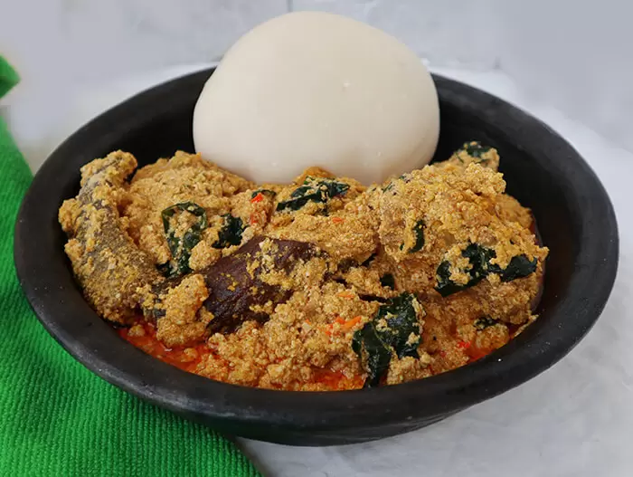

Egusi soup Recipes

Ingredients:
- Egusi seeds (melon seeds) - 2 cups
- Assorted meat (beef, goat meat, or chicken) - 1.5kg
- Stockfish - 1 medium size
- Dry fish - 1 medium size
- Palm oil - 250ml
- Ground crayfish - 1 cup
- Vegetables (spinach, bitterleaf, or ugu) - a bunch
- Salt and pepper to taste
- Water
Serving: 6-8 people
Steps:
- Wash and season the assorted meat with salt and pepper. Boil until tender.
- Soak the stockfish and dry fish in warm water for about 10 minutes, then wash and set aside.
- Grind the egusi seeds into a fine powder using a blender or mortar and pestle.
- In a large pot, heat the palm oil over medium heat. Add the ground egusi and stir continuously for about 5 minutes until it thickens.
- Add the boiled meat, stockfish, and dry fish to the pot. Stir well to combine.
- Add water gradually to achieve your desired soup consistency. Bring to a boil.
- Add the ground crayfish. Stir well.
- Wash and chop the vegetables, then add them to the soup. Cook for an additional 5-10 minutes until the vegetables are tender.
- Adjust seasoning with salt and pepper as needed. Serve hot with your choice of swallow (fufu, pounded yam, etc.).
Back to Home